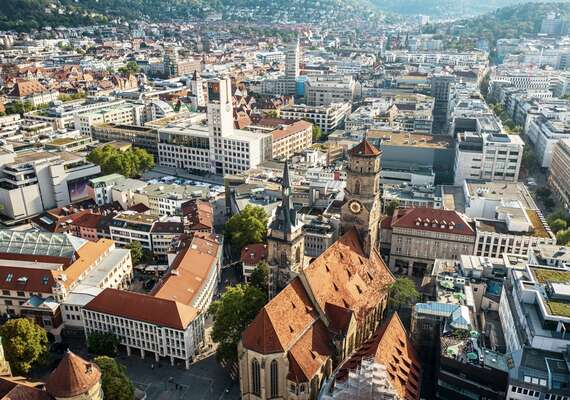
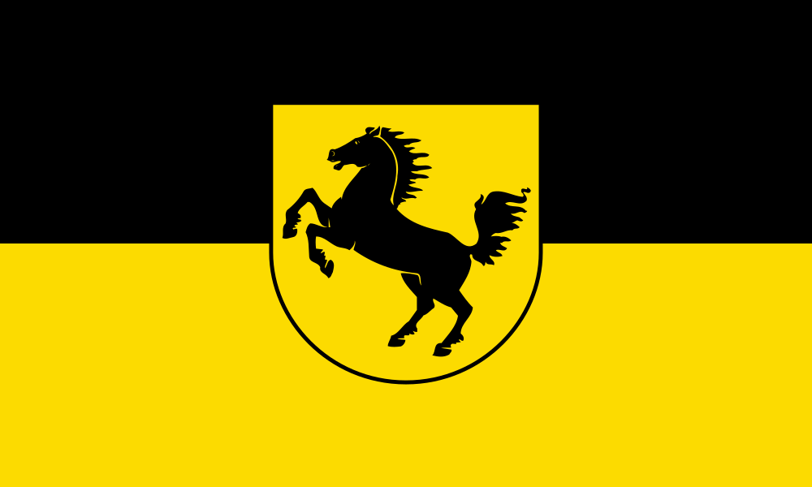
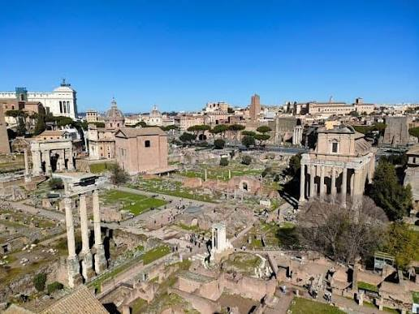
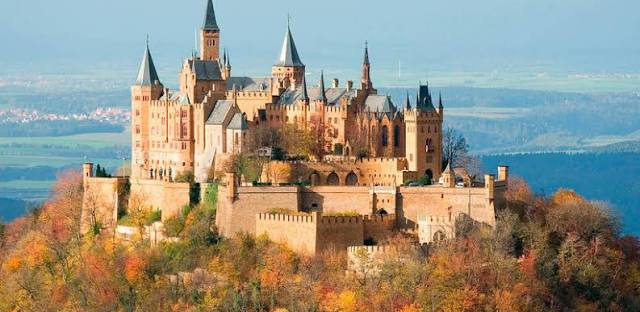
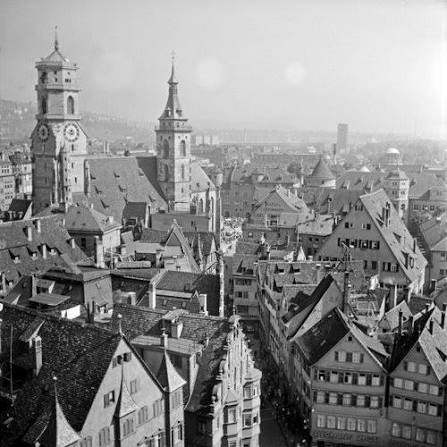

General numbers
History

The history of Stuttgart begins long before the city received its modern name. During the Roman period, around 90 AD, the Romans established a military fort in the area of present-day Bad Cannstatt. The settlement developed into an important regional center, benefiting from its location near the Neckar River and several trade routes. After the Romans withdrew during the third century, the region came under the influence of Germanic tribes, particularly the Alemanni.
The origins of Stuttgart itself are traditionally traced to around 950 AD, when Duke Liudolf of Swabia is believed to have established a horse-breeding settlement in the valley. This settlement was known as a Stutengarten, meaning "mare garden," from which the name Stuttgart eventually developed. The city's coat of arms, featuring a black horse on a yellow background, reflects this heritage.
During the following centuries, Stuttgart gradually developed from a small agricultural settlement into a more established community. Its location provided fertile land and access to nearby settlements, although the surrounding hills limited expansion.
By the late 12th century, Stuttgart had become increasingly important under local noble families. Its development during this period laid the foundations for its later emergence as a medieval town and political center.

During the Middle Ages, Stuttgart transformed from a relatively small settlement into an important political and economic center. Around the early 13th century, the settlement received town privileges under the Margraves of Baden, strengthening its legal and commercial position. In the mid-13th century, Stuttgart came under the control of the Counts of Württemberg, marking a turning point in its development.
By the early 14th century, Stuttgart had become a principal residence of the Württemberg rulers. The town expanded around its castle, which later developed into the Old Castle (Altes Schloss). Defensive walls, markets, churches, and residential buildings gradually shaped its medieval appearance.
Stuttgart benefited from its growing administrative importance. Merchants, craftsmen, and agricultural producers contributed to the local economy, while vineyards on the surrounding hills supported wine production.
During the 15th century, Stuttgart experienced further political and cultural development. The division of Württemberg in 1442 temporarily weakened territorial unity, but Stuttgart remained an important residence. The reunification of Württemberg in 1482 strengthened its position.
In 1495, Württemberg was elevated from a county to a duchy within the Holy Roman Empire. Stuttgart consequently gained greater significance as the residence of the ruling dynasty, preparing the city for further expansion.

From the 16th century onward, Stuttgart developed into an increasingly important political and cultural center. The Protestant Reformation was introduced in Württemberg in 1534, fundamentally changing religious and educational life. During the 18th century, the construction of the New Palace reflected the growing ambitions of the Württemberg rulers.
In 1806, Stuttgart became the capital of the newly established Kingdom of Württemberg. Industrialization during the 19th century transformed the city through railway construction, population growth, and manufacturing. Stuttgart later became a center of automotive innovation, associated with pioneers such as Gottlieb Daimler and Wilhelm Maybach.
Following German unification in 1871, Stuttgart continued expanding economically and culturally. However, the Second World War brought widespread destruction. Allied bombing severely damaged the city, while the Nazi regime persecuted and deported Jewish residents and other targeted groups.
After 1945, Stuttgart underwent extensive reconstruction and experienced rapid economic growth. In 1952, it became the capital of the newly established state of Baden-Württemberg.
Today, Stuttgart is internationally recognized for its automotive industry, research institutions, cultural attractions, and economic strength. Major infrastructure projects, including Stuttgart 21, continue to reshape the city as it addresses modern transportation, housing, and environmental challenges.
Politis
Stuttgart is the capital of Baden-Württemberg and an important political center in southwestern Germany. Its political system operates within Germany's federal democratic structure, with responsibilities divided between municipal, state, and federal governments.
At the municipal level, Stuttgart is governed by a directly elected Lord Mayor (Oberbürgermeister) and a City Council (Gemeinderat). The mayor leads the city administration, represents Stuttgart publicly, and chairs council meetings. The City Council consists of 60 elected members who make decisions concerning urban planning, transportation, housing, public services, and municipal finances.
Stuttgart also serves as the seat of Baden-Württemberg's state government and parliament (Landtag). Although these institutions are located in Stuttgart, their authority extends across the entire state rather than just the city.
The current Lord Mayor is Frank Nopper of the Christian Democratic Union (CDU), who took office in February 2021 after winning the 2020 mayoral election. His administration emphasizes economic development, infrastructure, environmental protection, and public transportation.
Stuttgart has a politically diverse electorate. The CDU and Alliance 90/The Greens are particularly influential, each holding 14 seats in the City Council as of October 2026. Other represented parties and groups include the Social Democrats (SPD), Free Democrats (FDP), Alternative for Germany (AfD), The Left, Volt, and several local political organizations.
Environmental policy has become a major political issue, particularly concerning air pollution, climate protection, and sustainable mobility. The controversial Stuttgart 21 railway project has also generated significant political debate and public demonstrations.
Housing affordability, urban development, transportation infrastructure, and economic competitiveness remain central political challenges. Stuttgart's importance as an automotive and industrial center makes the transition toward electric mobility particularly relevant.
Overall, Stuttgart's politics reflect a combination of conservative, progressive, liberal, and local political interests. Its municipal government must balance economic development, environmental objectives, and residents' needs while operating within Germany's broader federal political system.
Come Around
Click a district to get more information.
The history Stuttgart-Mitte is the historical, cultural, and commercial heart of Stuttgart, the capital of Baden-Württemberg, Germany. As the city's central district, it combines centuries of history with modern urban life, making it an important destination for residents, tourists, and businesses alike.
At its center lies Schlossplatz, Stuttgart's most famous public square, surrounded by impressive architecture, including the Neues Schloss (New Palace). Nearby, the Altes Schloss (Old Castle) houses the Württemberg State Museum, offering visitors insight into the region's rich history. The district is also home to significant cultural institutions, such as the Stuttgart State Opera, the Kunstmuseum Stuttgart, and the Staatsgalerie.
Stuttgart-Mitte is also the city's primary shopping and entertainment district. Königstraße, one of Germany's busiest shopping streets, stretches through the center, featuring numerous shops, restaurants, and cafés. The surrounding streets offer a mixture of traditional establishments and modern businesses.
Transportation plays a crucial role in Stuttgart-Mitte's importance. Stuttgart Hauptbahnhof, the city's main railway station, connects the district to regional, national, and international destinations. An extensive network of Stadtbahn and S-Bahn services provides convenient access to the wider metropolitan area.
Despite its dense urban environment, Stuttgart-Mitte offers green spaces such as the Schlossgarten, where residents can relax and enjoy nature.
Overall, Stuttgart-Mitte represents the identity of Stuttgart itself. Its combination of historical landmarks, cultural attractions, economic activity, and transportation infrastructure makes it the city's central gathering place and a vibrant symbol of Stuttgart's past, present, and future. century, Stuttgart had become increasingly important under local noble families. Its development during this period laid the foundations for its later emergence as a medieval town and political center.
Bad Cannstatt is one of Stuttgart's oldest and most historically significant districts, located along the Neckar River. Its history stretches back to Roman times, when the settlement served as an important military and trading location. Long before Stuttgart developed into a major city, Cannstatt was already an established settlement, making it an essential part of the region's history.
The district is particularly famous for its mineral springs, which have attracted visitors for centuries. These natural resources contributed to Cannstatt's development as a spa town, eventually earning it the designation "Bad." Even today, mineral baths such as MineralBad Cannstatt preserve this tradition.
Cannstatt's historic center features narrow streets, traditional buildings, and the Marktplatz, reflecting its long history as an independent town. In 1905, Cannstatt was incorporated into Stuttgart, becoming an important part of the expanding city while maintaining its distinct local identity.
Today, Bad Cannstatt is also known for its cultural attractions and major events. The Cannstatter Wasen hosts the annual Cannstatter Volksfest, one of Germany's largest traditional festivals. Nearby, the Mercedes-Benz Museum celebrates Stuttgart's automotive heritage, while the MHPArena serves as the home stadium of VfB Stuttgart.
The district also benefits from extensive public transportation connections, including S-Bahn, Stadtbahn, and regional railway services.
Overall, Bad Cannstatt represents the historical roots of modern Stuttgart. Its combination of ancient heritage, traditional architecture, mineral springs, and modern attractions makes it a unique district where the city's past and present come together, preserving its identity within Stuttgart's urban landscape. the identity of Stuttgart itself. Its combination of historical landmarks, cultural attractions, economic activity, and transportation infrastructure makes it the city's central gathering place and a vibrant symbol of Stuttgart's past, present, and future. century, Stuttgart had become increasingly important under local noble families. Its development during this period laid the foundations for its later emergence as a medieval town and political center.
Stuttgart-Nord is a district shaped by the city's industrial development, transportation infrastructure, and urban expansion. Located north of the city center, it combines historic industrial areas with residential neighborhoods, green spaces, and modern commercial developments, reflecting Stuttgart's transformation into an important economic center.
During the nineteenth and twentieth centuries, Stuttgart-Nord became closely associated with industrialization. Its proximity to major railway lines encouraged the establishment of factories, warehouses, workshops, and freight facilities. The district's industrial heritage remains particularly visible around the Pragstraße and Nordbahnhof areas, where railway infrastructure and former industrial properties continue to influence the urban landscape.
One of Stuttgart-Nord's most recognizable landmarks is the Porsche Museum at Porscheplatz. However, the museum itself is located in neighboring Zuffenhausen, highlighting the broader industrial character of northern Stuttgart. Within Stuttgart-Nord, the historic Wagenhallen, formerly used for railway maintenance, have been transformed into an important cultural and creative center.
Despite its industrial associations, Stuttgart-Nord also features significant recreational areas. The Killesbergpark, known for its landscaped gardens, observation tower, and panoramic views, provides a peaceful contrast to the district's urban environment. Nearby, the Weißenhof Estate represents an internationally significant example of modernist architecture.
Today, Stuttgart-Nord continues to evolve through urban redevelopment projects, particularly around the former railway facilities.
Overall, Stuttgart-Nord represents an important chapter in Stuttgart's industrial history. Its combination of railway heritage, cultural transformation, modern architecture, and green spaces illustrates how the district connects the city's industrial past with its changing urban future. the identity of Stuttgart itself. Its combination of historical landmarks, cultural attractions, economic activity, and transportation infrastructure makes it the city's central gathering place and a vibrant symbol of Stuttgart's past, present, and future. century, Stuttgart had become increasingly important under local noble families. Its development during this period laid the foundations for its later emergence as a medieval town and political center.
The Stuttgart-Untertürkheim is a historic district located along the Neckar River in eastern Stuttgart. Known for its vineyards, traditional wine culture, and industrial heritage, Untertürkheim combines the atmosphere of a historic market town with the economic importance of modern automotive manufacturing.
The district's history stretches back to the Middle Ages, when agriculture and wine production formed the foundation of its economy. Its favorable climate and hillside vineyards encouraged generations of winegrowers to cultivate grapes, establishing a tradition that continues today. Untertürkheim received market rights in 1889 and became part of Stuttgart in 1905.
The historic town center retains elements of its traditional character, including narrow streets, older buildings, and local wine taverns known as Besenwirtschaften. Surrounding vineyards, particularly those extending toward Rotenberg, offer scenic views across the Neckar Valley and provide an important connection to the region's agricultural past.
Untertürkheim is also closely associated with Mercedes-Benz. The company's major manufacturing complex has shaped the district's economy and development for over a century, creating a distinctive contrast between traditional vineyards and modern industrial facilities.
Public transportation, including S-Bahn and Stadtbahn services, connects Untertürkheim with central Stuttgart and neighboring districts, making it an accessible residential and employment center.
Overall, Stuttgart-Untertürkheim represents the coexistence of tradition and industry. Its historic market town identity, extensive vineyards, established wine culture, and automotive heritage make it a distinctive part of Stuttgart, preserving its agricultural roots while contributing to the city's modern economic and cultural landscape.-Mitte represents the identity of Stuttgart itself. Its combination of historical landmarks, cultural attractions, economic activity, and transportation infrastructure makes it the city's central gathering place and a vibrant symbol of Stuttgart's past, present, and future. century, Stuttgart had become increasingly important under local noble families. Its development during this period laid the foundations for its later emergence as a medieval town and political center.